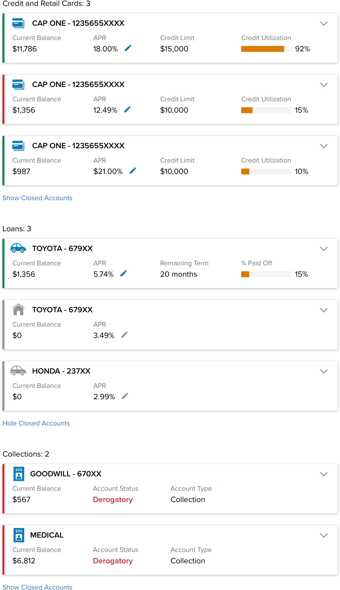
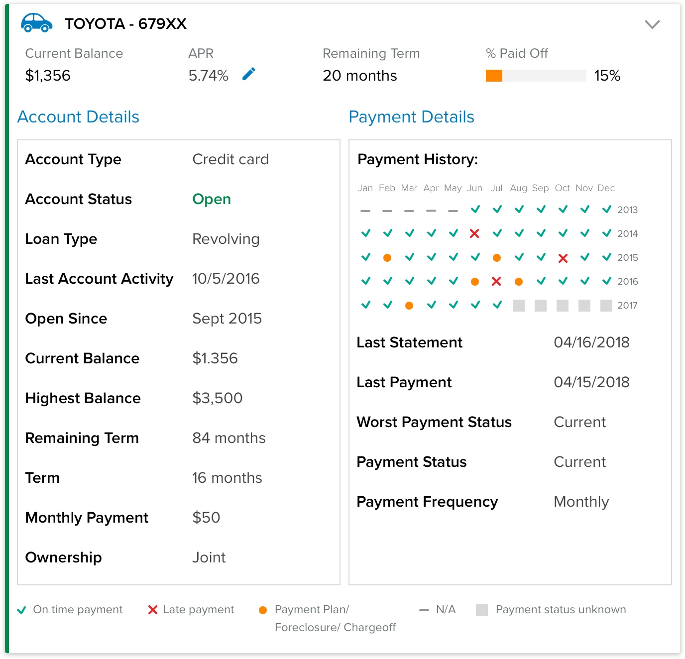
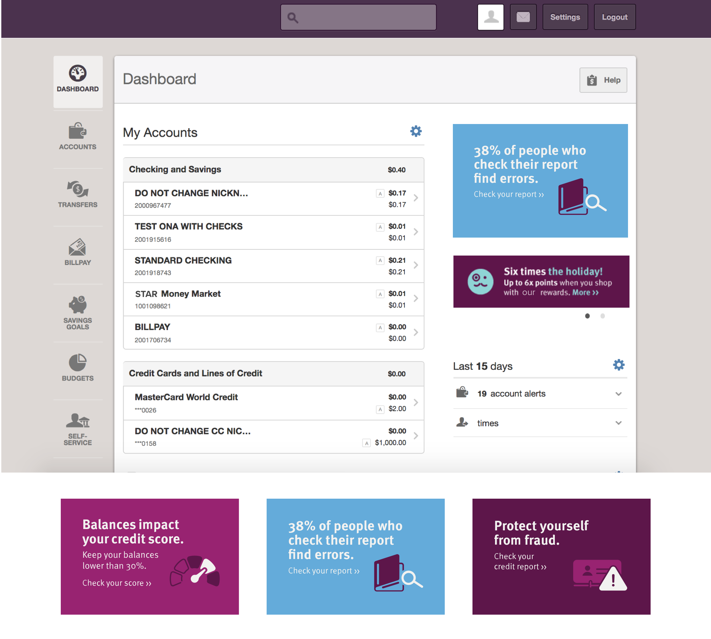
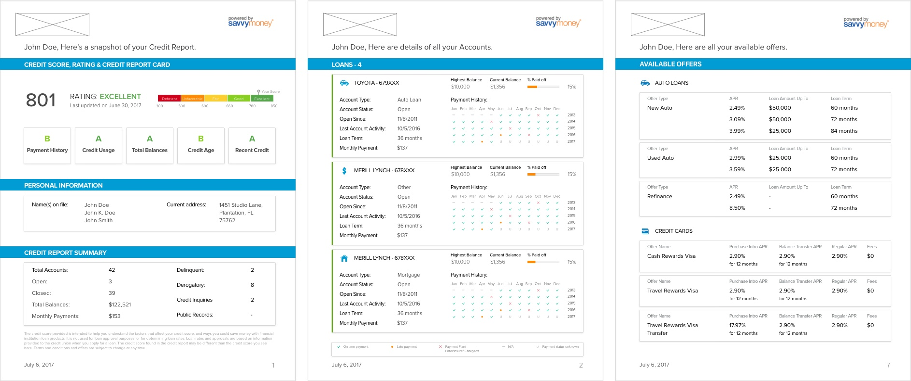
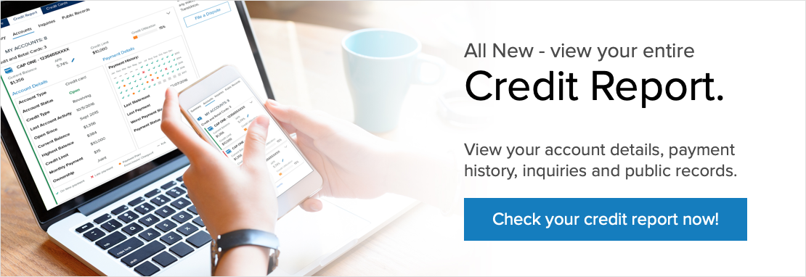

For SavvyMoney, by the virtue of being a credit score solution, adding the credit report to the product was an obvious next feature add. It was not only important for value add-on for users but becoming table stakes in the free credit score solutions. Thus, full credit became a major feature roll-out for SavvyMoney in 2017. It gave SavvyMoney competitive edge while providing a good ROI for partners and adding value for the end users.
Your credit report is a record of your credit activity and credit history. It includes the names of companies that have extended you credit and/or loans, as well as the credit limits and loan amounts. Your payment history is also part of this record. If you have delinquent accounts, bankruptcies, foreclosures or lawsuits, these can also be found in your credit report. - TransUnion
While credit score is an important criteria while extending credit, lenders also look at credit reports to gauge our creditworthiness. It gives a detailed peek into a person's credit history, payment behavior and any credit activity. The information in the report is usually reported to the credit bureaus by the lenders. Anyone can check their credit reports for free once a year (from all the 3 credit bureaus) but there are only handful of free tools that let people access their credit reports at any time. Thus, credit report was an important feature add-on to the SavvyMoney product.
Design the credit report for the members/customers of the partner financial institutions so that they
The end users should be able to access the report both on desktop and mobile and also take an abridged printed version to the branch to discuss loan prospects.
I led the design vertical of the feature rollout, from defining requirements, designing the web and mobile interface to collaborating with partnership team to run email and marketing campaigns for new feature release.
Step 1: Understanding the monster
The project started with speaking to the subject matter experts (SME’s) and learning about the credit report and its 200+ attributes. I looked at sample reports by TransUnion and read through the xml response that the bureau sent at the credit report request. This exercise helped me lot to understand the structure and make-up of credit reports and identify more significant attributes from others.
Step 2: Competitive benchmarking of other credit report tools
Credit reports are one of those documents which are not easy to understood despite their impact on our financial lives. Thus, one of the most important requirements were to make different sections easy to understand such that not only their meaning is well understood, but users are able to “talk the talk” and connect with the financial jargon.
Being new to the industry, it was important to benchmark and ask the question — “What is out there?”, “How do others show the complex terms?”, “How to they allow for easy navigation?” and “How can ours be better?”. Thus, a bunch of products were benchmarked on the following criteria.
Step 3: Defining the IA, interactions and final UI
Consumer credit reports, in its entirety, have 4 main sections:
While all the other sections where mostly summary information and pretty straightforward to organize and navigate, the tradeline details was the tricky one. It had detailed information on when the account was opened, its payment details, and payment history going back up to 5 years. Based on the on-time payments made to the account, it could be in one of the three states — good standing, delinquent and derogatory.
Different visual metaphors and representations were used to help user understand and navigate the information easily. Special focus was given such that visual elements were accessible adhering to the level AA of WCAG 2.0 guidelines.
 Step 4: Monitoring progress
Since launch, different KPI’s are being measured and monitored to attribute to the success and efficacy of the release. These include (and not limited to) number of unique views, time spent on the pages, number of support requests — direct and through partners and user anecdotes and pain points through regular partner check-ins.
The feature was well received by the partners who were very excited to roll the feature out to their members. There was an immediate hike in engagement resulting in a ~8% decrease in the drop-offs in the first quarter. Since launch, there have over 600,000+ unique views of the credit report with users spending 1 min 40 secs on average on its various pages. Credit report pages are the second most visited pages across the product, only after credit score.
Credit report launch also inspired a series of “education-based” messaging inside online banking aimed at increasing user acquisition.
One of the requests from partners and users alike, was the ability for the users to print their credit reports and discuss their loan prospects with the loan representatives at the financial institution’s local branch. Thus, an abridged version of the report was designed with the summary of the score, credit accounts and eligible offers, that the users can take to the branch and discuss their options. The printable version of the report was launched in Q1 2018.
I had a very humbling experience with the project. This was my first end-to-end feature release where I was involved from requirements gathering to final deployment and market release. It was a great experience working across the organization — with project manager, developers and business development teams, to bring the feature out in the market, in the hands of over 600,000+ users. (statistics as of writing this case study, which I am sure would have quadrupled by now :))
Design: The project was a refresher on the importance of hierarchy of content, visual elements and navigation. It was also a good (and required!) lesson on the importance of maintaining consistency across the different components, sections and pages of the product.
Everything else: Apart from the project itself, I was just astounded by the depth of information that is shared between the lenders about our financial life which we barely track or even understand. Despite the fact that the credit reports are freely available, only a third of Americans actually view it. There have been ongoing discussions and debates over accuracy of the reports. 1 in 5 people who view their reports find errors. This could mean an overhead of hundreds of thousands of dollars, denied credit or identity fraud. For me, this project was a great exploration in understanding what forms the basis of the credit score models and how credit scores and reports work in general.